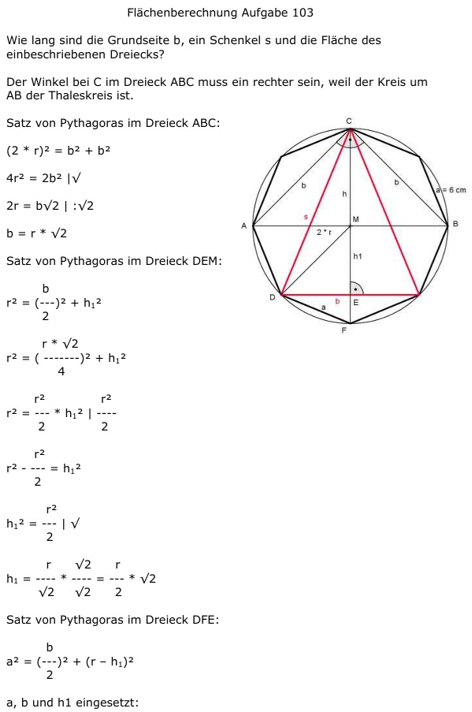

Aufgabe 103 Wie lang sind die Grundseite b, ein Schenkel s und die Fläche des einbeschriebenen Dreiecks?  Der Winkel bei C im Dreieck ABC muss ein rechter sein, weil der Kreis um AB der Thaleskreis ist. Satz von Pythagoras im Dreieck ABC: (2 * r)2 = b2 + b2 4r2 = 2b2 |√ 2r = b√2 |:√2 b = r * √2 Satz von Pythagoras im Dreieck DEM: b r2 = (---)2 + h12 2 r * √2 r2 = (-------)2 + h12 4 r2 r2 r2 = ---- * h12 | - ---- 2 2 r2 r2 - ---- = h12 2 r2 h12 = ---- |√ 2 r √2 r h1 = ---- * ---- = --- * √2 √2 √2 2 Satz von Pythagoras im Dreieck DFE: b a2 = (---)2 + (r – h1)2 2 a, b und h1 eingesetzt: r * √2 r * √2 36 = (--------)2 + (r - ---------)2 2 2 r2 r2 36 = ---- + r2 - r2 * √2 + ---- 2 2 36 = r2 + r2 - r2 * √2 36 = r2(2 - √2) |:(2 - √2) 36 r2 = --------- = 61,5 | √ 2 - √2 r = 7,8 cm b = 7,8 * √2 = 11 cm 7,8 h1 = ----- = 5,5 cm √2 h = r + h1 = 7,8 cm + 5,5 cm = 13,3 cm b * h 11 cm * 13,3 cm A = ------- = ------------------- = 73,2 cm2 2 2 Satz von Pythagoras im Dreieck DEC: b s2 = (---)2 * h2 2 s2 = 5,52 + 13,32 s2 = 207,1 |√ s = 14,4 cm